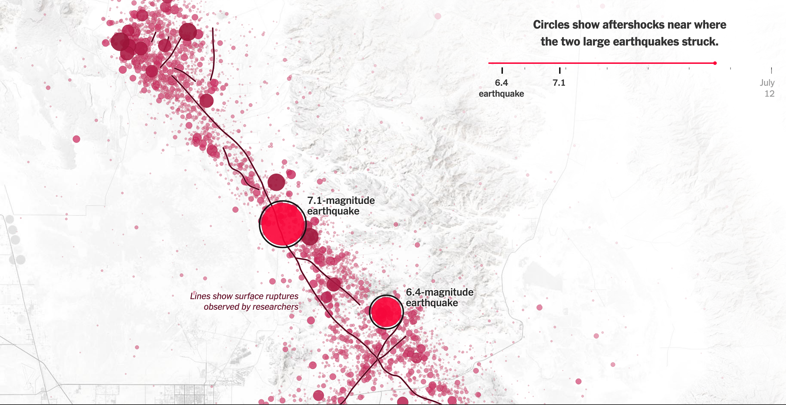
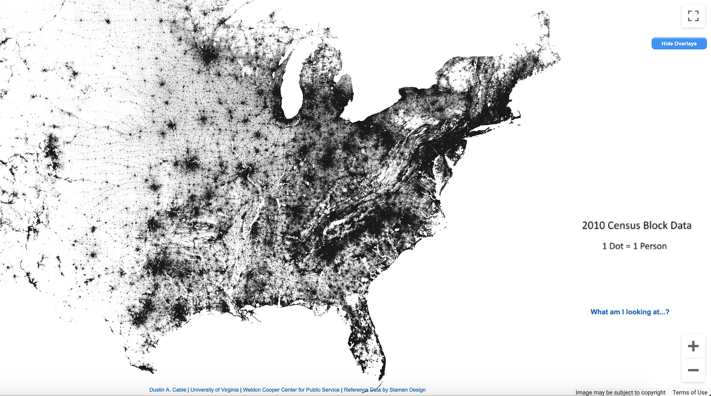
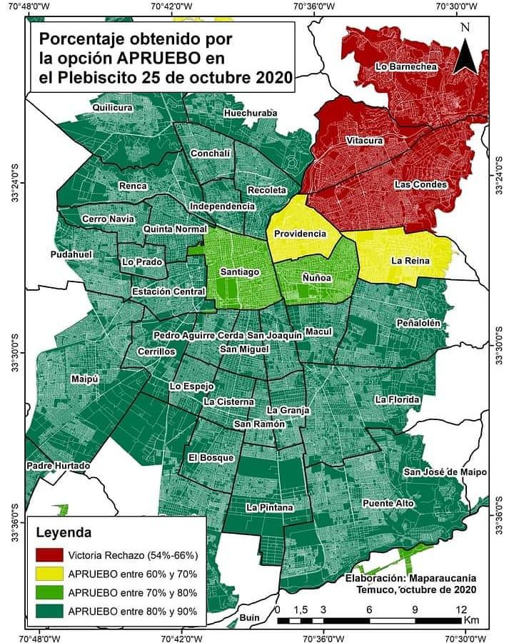

¡Hola 👋! Espera mientras comienza la sesión.
Antes que todo, ¿cómo están?
Visualización de Información
IIC2026 2020-2
Visualización de datos espaciales
Visualización de Información
IIC2026 2020-2
Repaso
Repaso
1. Codificación de datos geométricos
2. Datos geográficos
3. Proyecciones
4. Idioms para datos geográficos en D3.js
Utilizar geometría entregada
Si realmente es uno de los focos y puntos de interés identificados en la abstracción de tareas y datos.

GeoJSON
{
"type": "FeatureCollection",
"features": [
{
"type": "Feature",
"properties": {
"ADMIN": "Aruba",
},
"geometry": {
"type": "MultiPolygon",
"coordinates": [
[
[
[
-69.99693762899992,
12.577582098000036
],
[
-69.93639075399994,
12.53172435100005
],
...
]
...
]
...
}
}
...
]
}
(Fuente - Data Packaged Core Datasets: geocountries)
Cargado en D3.js
const caminosGeo = d3.geoPath().projection(proyeccion);
svg
.selectAll("path")
.data(datos.features)
.enter()
.append("path")
.attr("d", caminosGeo)
.attr("fill", "blue")
.attr("opacity", 0.3)
.attr("stroke", "blue");
Proyecciones
d3.geoMercator().fitSize([width, height], datos);
d3.geoCylindricalEqualArea().fitSize([width, height], datos);
d3.geoWinkel3().fitSize([width, height], datos);
Proyecciones
Las distintas alternativas de proyecciones proveen un trade-off entre fidelidad de tamaño y fidelidad de forma.
No hay una proyección correcta, la decisión de qué proyección usar puede considerarse de diseño, que depende de la situación de aplicación.
Puedes explorar aquí distintas opciones de proyección provistas por D3.js.
Ejemplos de idioms

(Fuente - How Two Big Earthquakes Triggered 16,000 More in Southern California)
Ejemplos de idioms

(Fuente - The Shape of Slavery)
¡Visualizaciones del día!
Propuesto por estudiante Daniela Concha.
(Fuente: The Racial Dot Map)
¡Visualizaciones del día!

Propuesto por estudiantes: Gerardo Crot y Francisco.
{kind=link}
(Creador: Charles Joseph Minard)
Más sobre datos geográficos
Algunos archivos GeoJSON pueden ser muy pesados. Mientras más objetos geométricos definidos, y mientras más detalle, más peso.
Más sobre datos geográficos
Algunos archivos GeoJSON pueden ser muy pesados. Mientras más objetos geométricos definidos, y mientras más detalle, más peso.
Algunas opciones para reducir tamaño total:
- Evitar guardar archivos con indentaciones incluidas. ¡Los espcios pesan!
Más sobre datos geográficos
Algunos archivos GeoJSON pueden ser muy pesados. Mientras más objetos geométricos definidos, y mientras más detalle, más peso.
Algunas opciones para reducir tamaño total:
- Evitar guardar archivos con indentaciones incluidas. ¡Los espcios pesan!
- Remover todo dato no geométrico que no vaya a ser usado.
Más sobre datos geográficos
Algunos archivos GeoJSON pueden ser muy pesados. Mientras más objetos geométricos definidos, y mientras más detalle, más peso.
Algunas opciones para reducir tamaño total:
- Evitar guardar archivos con indentaciones incluidas. ¡Los espcios pesan!
- Remover todo dato no geométrico que no vaya a ser usado.
- También hay alternativas de transformación de formato que suelen reducir tamaño: TopoJSON.
Más sobre datos geográficos
Algunos archivos GeoJSON pueden ser muy pesados. Mientras más objetos geométricos definidos, y mientras más detalle, más peso.
Algunas opciones para reducir tamaño total:
- Evitar guardar archivos con indentaciones incluidas. ¡Los espcios pesan!
- Remover todo dato no geométrico que no vaya a ser usado.
- También hay alternativas de transformación de formato que suelen reducir tamaño: TopoJSON.
- También hay soluciones que reducen detalle de archivos de geometría:
toposimplify.
Más sobre datos geográficos
Algunos archivos GeoJSON pueden ser muy pesados. Mientras más objetos geométricos definidos, y mientras más detalle, más peso.
Algunas opciones para reducir tamaño total:
- Evitar guardar archivos con indentaciones incluidas. ¡Los espcios pesan!
- Remover todo dato no geométrico que no vaya a ser usado.
- También hay alternativas de transformación de formato que suelen reducir tamaño: TopoJSON.
- También hay soluciones que reducen detalle de archivos de geometría:
toposimplify. - Si no se puede reducir mucho el tamaño, ¡agregar un mensaje al usuario que le explique!
Más sobre datos geográficos
Si no encuentras archivos GeoJSON para tus datos, puedes obtenerlos transformando otros formatos:
- Shapefile a GeoJSON:
shape2json. - Shapefile a GeoJSON:
topo2geo.
¿Más dudas?
¡Visualización de la semana!
(Fuente: Instagram: Maparaucania
Próximos eventos:
Este jueves (29 de octubre) se publica Entrega 3. Jueves siguiente (5 de noviembre) se publica Hito 3.
Próximos eventos:
Este jueves (29 de octubre) se publica Entrega 3. Jueves siguiente (5 de noviembre) se publica Hito 3.
Se vienen sesiones sobre: Facet (jueves 29) y Reducción de datos (martes 3) .
Próximos eventos:
Este jueves (29 de octubre) se publica Entrega 3. Jueves siguiente (5 de noviembre) se publica Hito 3.
Se vienen sesiones sobre: Facet (jueves 29) y Reducción de datos (martes 3) .
Correcciones de Hito 2 están en proceso.